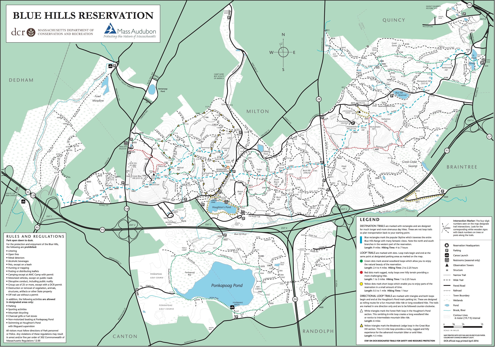
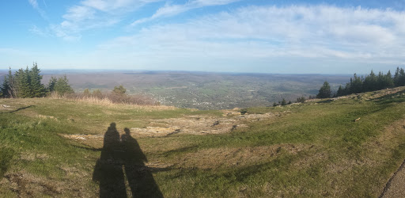

Hiking the Long Trail
In 2016 my wife and I decided to hike the Long Trail in Vermont, which starts at the Massachusetts border, follows the crest of the Green Mountains for 273 miles, and ends at the Canadian border. Previous to this we had never even been on an overnight hike, so it was key to research the required gear, physical training, food preparation, as well as how to safely take our dog Atticus.

We prepared for the hike by training the muscle groups that would be used heavily, as well as training for endurance. This involved lots of squats, timed wall squats, lunges, and running stairs. Once we had our backpacks, we loaded them up with water bottles to simulate the weight we would have to carry, and then trekked through the neighborhood. We were very fortunate to live within an easy drive to the Blue Hills Reservation (map pictured), which has dozens of miles of trails over elevation changes similar to the Long Trail. About once a week in the months leading up to our big hike, we would gear up, head to this or other trail systems, and train for 9-10 miles.How we trained our bodies...
Speaking of gear, we needed to research, purchase, and test a lot of gear in a fairly short amount of time. Given that we would each be taking a month off of work, we had to plan our purchases carefully. You're always trying to limit the weight in your pack, and it's generally true that gear that weighs less is more expensive. We had an idea of how much weight we could each carry, how many liters of space we would need (pack size is measured in liters), and how much we could spend. With this information we set out to buy our packs, tent, sleeping bags, sleeping pads, inflatable pillows, hiking clothes, boots, rope, (to hang our bear bag), bear bag, water filter, water bottles, stove, pot, bowls, sporks (our preferred utensil for hiking), and more, including food for a month. We then tested all of this gear on an overnight hike to Mount Greylock, which sits on the Appalachian Trail, and has the tallest view in Massachusetts.
It was interesting to learn about the best types of food to have on a long hike. I had initially guessed that we would be eating a lot of protein to help build muscle, but it turns out that a protein-heavy diet is mostly useful for preparing for the hike. What you actually want on a long hike is calorie-dense food (lots of calories packed into a small space). And the calories should mostly be from carbs, then fats, and only about 15% from protein. Carbs are the cheapest way (as far as energy spent) for your body to get energy into your bloodstream. Fats are the second cheapest energy source, and finally protein, which has to be significantly processed by your body to be converted into usable energy.
I was forecasted to spend 4000+ calories per day, and my wife 3250+ calories per day, and with that information I set out to plan our daily diet. We ate Clif bars, pop tarts, trail mix (with pretzels, nuts, M&Ms, chex mix, etc), tortillas with a peanut butter/Nutella mixture, more trail mix, and macaroni and cheese with packets of tuna. Along the way we also picked up some Snickers bars, cheddar cheese blocks, and summer sausage. We mailed boxes of food to post offices on our route, that we would pick up just as the food we were carrying was running low.
Our dog Atticus accompanied us on most of our training, and carried his weight along the path itself. He got extra rations too, including many of the peanut butter filled pretzels from our trail mix. He wasn't thrilled about the dog booties he tried on, so we ended up bringing a wax that applies to his pads for protection, although most days it turned out not to be necessary.
We finished the 273 miles of the Long Trail in 26 days and largely unscathed, and being in Vermont, we celebrated with some Ben & Jerry's. It was an incredible experience. Both of us feel that more long hiking trips are in our future.